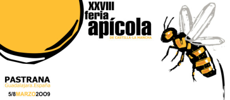

Fiestas típicas
Fuentelencina celebra durante el año varias fiestas populares. Es decir, si reserva durante estas fecha puede disfrutar de
la pasión viviente de semana santa o de una matanza popular por el mismo precio.
Matanza Popular
El 14 de Marzo de 2011, Fuentelencina celebra la tradicional matanza popular. Donde podrá degustar los típicos productos de este animal y los platos típicos de la zona como migas alcarreñas.
Fería Apícola de Pastrana

Del 10 al 13 de Marzo de 2011 se celebra la trigesima edición de la feria apícola de Pastrana. Los apartamentos rurales Los Parajes son una elección perfecta para alojarse durante la fería ya que están a tan sólo 14 kilometros de Fuentelencina.
Pasión viviente
Si la visita a Fuentelencina la hacemos en Semana Santa podremos asistir a la Pasión Viviente que la Asociación Cultural San Agustín representa cada Jueves Santo por la noche. La semana santa de 2011 es del 20 al 24 de Abril.
Santísimo Cristo de la agonía y San Isidro
La mañana del 14 de mayo se celebra una misa en honor del santísimo Cristo de la agonía. Después hay un aperitivo para la gente que acuda. Por la tarde hay una procesión y después hay una subasta de productos típicos como las rosquillas o arripapalos, tartas, vino … También se rifa un cordero y una cesta.
Por la tarde hay música que dura hasta las dos de la madrugada. La mañana del día 15 se celebra una misa y procesión.
Fiestas de San Agustín
Fuentelencina sus fiestas desde el 26 al 31 de agosto. Durante estos días, Fuentelencina ofrece vervenas, novilladas, encierros por las calle y encierros por el campo.
Certamen de Villancicos
Fuentelencina pertenece a la mancomunidad Villas Alcarreñas. Esta mancomunidad organiza un certamen de Villancicos cada navidad que ya va por su octava edición. Si visita Fuentelencina durante navidad se empapará de espíritu navideño entre zambombas y villancicos.